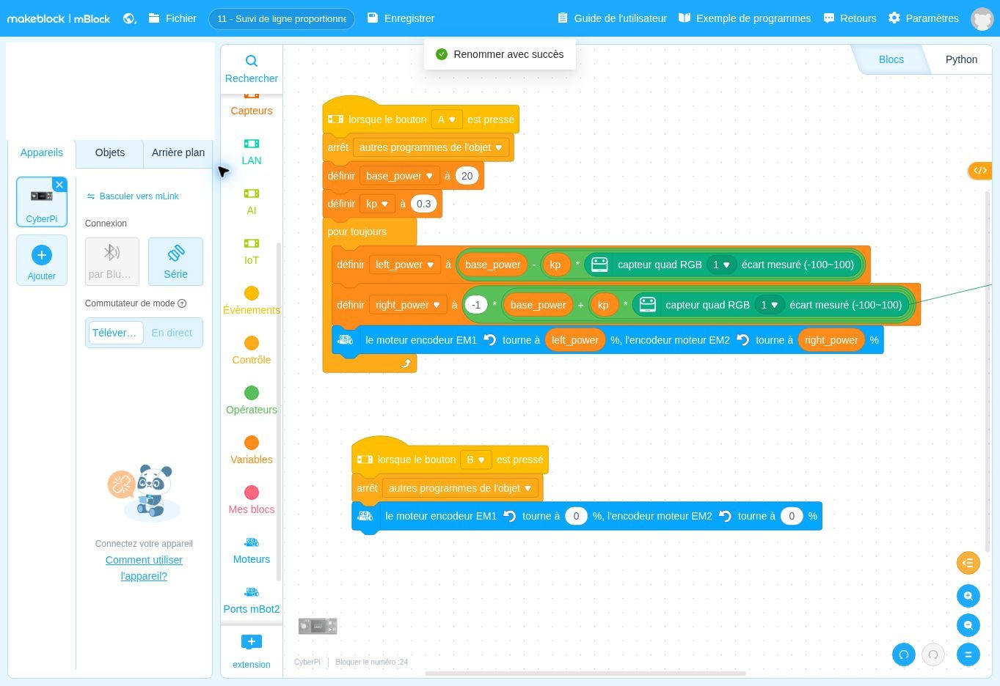

lorsque le bouton A ▾ est presséDépart
Ce que fait ce bloc : Départ du suivi.
Pourquoi il est là : Vous décidez du moment du départ.
Comment adapter la correction à l’écart mesuré ?
Le robot suit une ligne en corrigeant sa direction « à la mesure » : petit écart, petite correction ; grand écart, grande correction. Le suivi est plus fluide que celui de la fiche 10.
Un programme mBlock est un empilement de blocs, à lire de haut en bas. Chaque bloc a une couleur qui indique son rôle. Voici chaque bloc de cette fiche, dans l’ordre, expliqué simplement.
DépartContrôleAction du robotInformationÉcranMémoireCalcul
Les couleurs ci-dessous sont proches de celles de mBlock. Les blocs sont redessinés ici pour être lisibles ; la vraie capture d’écran est plus bas.
Ce que fait ce bloc : Départ du suivi.
Pourquoi il est là : Vous décidez du moment du départ.
Ce que fait ce bloc : Arrête d’éventuels autres scripts qui tourneraient encore.
Pourquoi il est là : Évite qu’un ancien programme ne commande les moteurs en même temps.
Ce que fait ce bloc : Crée (ou remet à jour) une case mémoire nommée base_power et y range le nombre 20.
Pourquoi il est là : base_power est la puissance de base : la vitesse du robot quand il est bien centré sur la ligne.
Mot à connaître. Une « variable » est une case de mémoire qui porte un nom et contient un nombre. On peut lire ce nombre ou le changer.
Ce que fait ce bloc : Range le nombre 0,3 dans la variable kp.
Pourquoi il est là : kp règle la « force » de la correction : plus kp est grand, plus le robot corrige fort quand il s’écarte.
Mot à connaître. kp est le « coefficient de correction ». Pensez-y comme à un bouton de sensibilité du volant.
Ce que fait ce bloc : Répète sans fin les calculs et les commandes à l’intérieur.
Pourquoi il est là : La correction doit être recalculée en continu, selon la nouvelle mesure.
Ce que fait ce bloc : Calcule la puissance de la roue gauche : la puissance de base moins une correction qui dépend de l’écart mesuré. Le résultat est rangé dans left_power.
Pourquoi il est là : Si le robot s’écarte, on enlève un peu de puissance à cette roue pour le faire revenir.
Dans ce bloc, il y a :
Mot à connaître. Ici « puissance » est en pourcentage (%) de la puissance maximale des moteurs, pas en tr/min.
Ce que fait ce bloc : Calcule la puissance de la roue droite : puissance de base plus une correction, puis multiplie par −1.
Pourquoi il est là : La roue droite reçoit l’inverse de la correction de la gauche : si l’une ralentit, l’autre accélère, et le robot vire. Le −1 compense le montage inversé du moteur droit.
Mot à connaître. Le moteur droit est monté à l’envers du gauche : pour avancer, il faut lui donner une valeur négative.
Ce que fait ce bloc : Envoie aux deux roues les puissances calculées juste avant : EM1 (roue gauche) reçoit left_power, EM2 (roue droite) reçoit right_power.
Pourquoi il est là : C’est l’étape qui transforme le calcul en mouvement réel. Comme elle est dans la boucle, le robot corrige sa trajectoire à chaque tour.
Ce que fait ce bloc : Départ de l’arrêt.
Pourquoi il est là : Permet de stopper le robot à tout moment.
Ce que fait ce bloc : Arrête la boucle du script 1.
Pourquoi il est là : Sinon elle relancerait les moteurs.
Ce que fait ce bloc : Met les deux moteurs à zéro.
Pourquoi il est là : Le robot s’immobilise.
C’est exactement ce que fait le programme, écrit avec des phrases. Les lignes décalées vers la droite sont à l’intérieur d’une répétition ou d’un choix.
Quand j’appuie sur A :
1. j’arrête les autres scripts ;
2. je range 20 dans « base_power » et 0,3 dans « kp » ;
3. je répète sans fin :
a. je lis l’écart (nombre entre −100 et 100) donné par le capteur ;
b. roue gauche = base_power − kp × écart ;
c. roue droite = −(base_power + kp × écart) ;
d. j’envoie ces puissances aux deux roues.
Quand j’appuie sur B :
j’arrête les autres scripts et je mets les deux moteurs à 0 %.Retrouvez dans cette capture les blocs expliqués ci-dessus. Vous pouvez aussi ouvrir le fichier dans mBlock pour le tester et le modifier.

Autres solutions : voir la page Dépannage. Ces fiches n’ont pas été testées avec un robot réel : vos observations peuvent différer légèrement.
Pour être sûr d’avoir compris, changez un seul élément, prévoyez le résultat, puis vérifiez avec le robot.